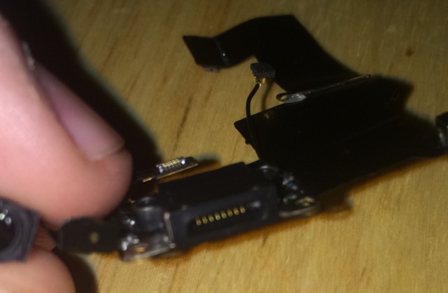
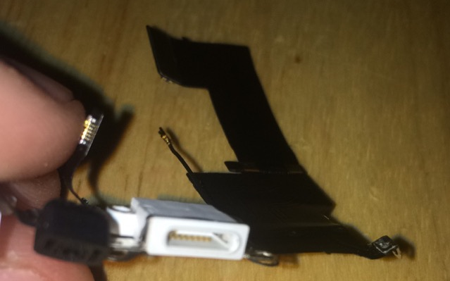
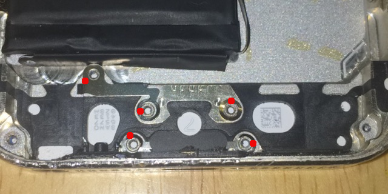
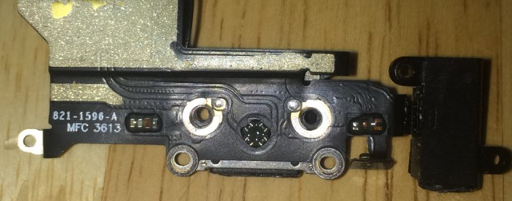
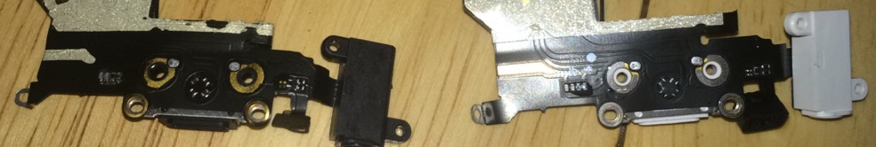

Saturday, March 12th 2016 - Getting mitmproxy running in my chrooted system - many thanks to AntonioLangiu: place text and image here.
Friday, March 11th 2016 - Replacing the lightning connector and headphone jack on my iPhone 5S: A few nights ago I woke up to the smell of that all too familar electrical burning smell. Half asleep and panic-stricken, I unplugged my phone from it's charger and nodded back to sleep assured that it was the issue. The next morning, upon further inspection, I was able to confirm that my suspicions were true. I looked at the bottom of the chassis of my phone and into the charging port and saw that one of the connector contacts looked damaged, almost as if it were burnt out. I went to amazon and purchased a replacement, the port, headphone jack, the whole shebang.

Orginal port (missing contact - between 4th and '5th' contacts from left)I installed the replacement when it came in and went to test its functionality. It wouldn't charge. After serveral reevaluations, I was confident in my procedure and was determined that it was due to defective hardware - it was purchased for ~$6.00 after all. So I purchased a similarly priced part from a different manufacturer.

First purchased replacement - notice the correct number of gold contacts; 8. But faulty?The newer replacement came in and I went through the same installation - by this time I was a whiz at it. Upon completion, I tested again. Still no dice! Was I installing something incorrectly? I had followed several guides online verbatim, (although none of which were well documented in the final steps). Being as confident in myself that I am, I was hard-pressed to blame myself. I know when I mess up and this wasn't one of those times.

Second, newly purchased replacement - again, notice the correct number of gold contacts; 8. But still faulty?Amidst troubleshooting, I became paranoid that the rear washers and braket of the connector were coming undone on placement of the new part and thusly, impeding charging functionality.

Washers and brackets that are crucial to proper functionality. (marked via red dot)But once again, I was confident that this was not the case. The brackets were present and in the right place upon installation. Was I missing something on the part? The new parts required transfer of several components from the original part, such as the boot/housing for the bottom microphone, the bracket for the home switch connection and the grounding bracket for the headphone jack, but was there more?

The rear view of the original part

The rear view of both replacement parts (first purchase on the left and second purchase on the right)
Could it be the metallic washers also on the part itself? In the original, the four screw holes had thin metal washers around them. I noticed that in my first purchased repair part that this was not the case; just gold plated/copper? around the holes. (on left) But this issue wasn't present in my most recently purchased part. (on right)
What was going on?
At this point I was just looking for the correct answer. After being some odd $13 in the hole, I had remembered that I had my girlfriend's old iPhone 5 from when she upgraded. I tore apart her phone and salvaged the lightning port and headphone jack. I installed the piece in the exact same manner as the previous 2 repair attempts noting the similar metallic washers on the back as in the original part and the second purchase from amazon. I booted it up and plugged in the charger and voila! Charging.
Could this have been an issue of defective aftermarket parts vs OEM? I don't know. But I am happy to have a phone that can charge again.
Friday, March 11th 2016 - Setting up crouton and unity desktop environment on my Lenovo 100s Chromebook: I had received my chromebook in the mail today and was elated with its unboxing. I had recently purchased a Rapberry Pi 2 for the ability of computing without lugging a huge device around but it soon became an ornament on my desk continually running automated programs such as my sitemap tweeter. A chromebook sounded like the ideal deivce for me; light, and small all while packing a punch. I powered it on and was greeted with ChromeOS. I knew that I wasn't completely satisfied. Another reason why I was looking into chromebooks was the integration of linux with crouton. As a prerequisite, I put my chromebook in developer mode which was as easy as pressing the escape and refresh key. I was presented with your OS is missing prompt to which a ctrl+d bypassed. I then followed onscreen instructions. After that, I followed instructions from here and installed the unity desktop environment as xfce doesn't suit me. I guess I'll be busy installing packages and tweaking my machine to my liking for the next while.
NOTE: ctrl+d on startup everytime is somewhat annoying.


{kind=link}